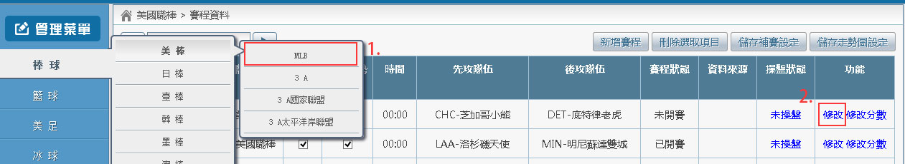
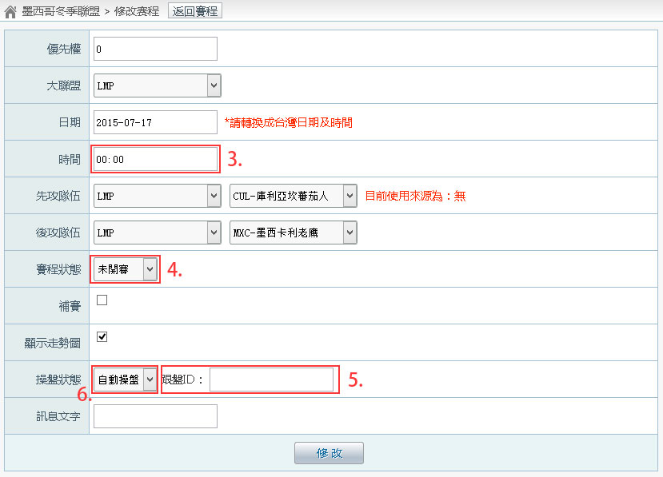

賽程修改
一、選擇比賽 (以美棒為例)


操作步驟：
- 點擊【美棒】(棒球 -> 美棒)
- 點擊【修改】，進入修改畫面
- 時間：如果時間有變，請輸入正確的時間
- 賽程狀態：請依需要進行變更
- 已開賽：開始比賽
- 已結束：結束比賽
- 未開賽：比賽還沒開始
- 取消：比賽被取消了
- 中止：比賽的時候，因為各種原因，比賽確定不會打了，選擇中止
- 延遲：當比賽延後，或是中途暫停，但是可能會繼續時，選擇延遲
- 跟盤 ID：請輸入新的跟盤 ID 或者不修改跟盤 ID
- 操盤狀態：如果您不需要跟盤，請選擇【未操盤】
※ 當您把賽程狀態改為：已結束、取消、中止、延遲，請將操盤狀態設成【未操盤】，避免資料被跟盤程式給改變了